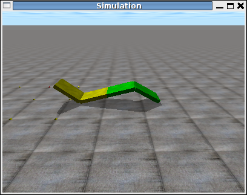

He escrito un tutorial sobre simulación de robots ápodos modulales con ODE. El ODE (Open Dynamics Engine) es el motor físico (libre y multiplataforma) que he utilizado para hacer las simulaciones de los robots de mi tesis.
El tutorial comienza por el ejemplo más simple posible (un “hola mundo”) y finaliza con la locomoción en 2D de un robot serpiente de 16 módulos.
La motivación es enseñar cómo realizar la locomoción de robots modulares para que otros puedan introducirse en este mundo y desarrollen sus propios robots y/o simulaciones. En mi caso, tardé mucho tiempo en encontrar el ODE, aprenderlo y desarrollar el software para hacer los experimentos de mi tesis. Cuando estuve buscando información en internet encontré muy poca. Me hubiera gustado que alguien hubiese escrito este tutorial. Así que, una vez que ya he terminado la tesis, he decidido hacerlo para ayudar a otros investigadores.